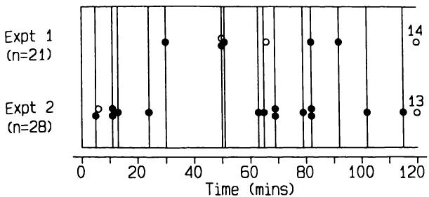

13 生存时间分析 13 Analysis of survival times
13.1 引言 13.1 INTRODUCTION
在大多数研究中，数据是测量值和属性的混合。前四章介绍了针对各种研究设计中定量和定性数据的分析方法。当关注点集中在某个事件发生所需的时间时，就会出现另一种类型的数据。这类数据最常见的来源之一是，我们记录从某个固定起点（例如手术）到受试者死亡的时间。因此，我们通常称之为生存时间或生存数据，对生存时间进行统计处理称为生存分析。正如我们将看到的，类似的数据也出现在其他情况下，但习惯上仍沿用相同的术语。
In most studies the data are a mixture of measurements and attributes. The preceding four chapters have presented methods for the analysis of both quantitative and qualitative data for various study designs. Another type of data arises when interest is focused on the time taken for some event to occur. One of the most common sources of such data is when we record the time from some fixed starting point, such as surgery, to the death of the subject. For this reason we usually refer to survival times or survival data and the statistical treatment of survival times is known as survival analysis. As we shall see, similar data arise in other situations, but it is customary to stick to the same terminology.
在临床研究中，生存时间通常指到死亡、到特定症状出现或到疾病缓解后复发的时间。尽管感兴趣的时间段的结束通常有明确的定义，但开始可能定义得不那么清楚。例如，通常不可能知道一个人患病多久了，因此诊断日期往往是最佳替代方案。对于某些疾病，这两个日期可能相差很大。
In clinical studies survival times often refer to the time to death, to development of a particular symptom, or to relapse after remission of disease. Although there is usually a clear definition of the end of the time period of interest, the start may be less well defined. It is, for example, rarely possible to know how long somebody has had a disease, so the date of diagnosis is often the best alternative. For some diseases these two dates can be very different.
生存时间有一个固有的特征，使得它们不适合用前几章描述的任何方法进行分析，那就是我们几乎从不观察到所有受试者都发生了感兴趣的事件。例如，在一项比较乳腺癌患者接受不同类型手术后生存情况的研究中，尽管患者将被随访数年，但许多患者在研究结束时仍然存活。对于这些患者，我们不知道他们何时会死亡，只知道他们在研究结束时仍然存活。因此，我们也不知道他们从手术开始的生存时间，只知道它会比他们在研究中的时间更长。我们称这类生存时间为截尾（censored），表示观察期在感兴趣的事件发生之前就被截断了。请注意，由于感兴趣的事件通常是不良事件，例如死亡，所以这里的“感兴趣”是科学上的，而非临床上的。
There is one inherent feature of survival times that makes them unsuitable for analysis by any of the methods described in the preceding chapters, which is that we almost never observe the event of interest in all subjects. For example, in a study to compare the survival of patients having different types of surgery for breast cancer, although the patients will be followed up for several years there will be many who are still alive at the end of the study. For these patients we do not know when they will die, only that they are still alive at the end of the study. Nor, therefore, do we know their survival time from surgery, only that it will be longer than their time in the study. We call such survival times censored, to indicate that the period of observation was cut off before the event of interest occurred. Note that as the event of interest is usually something that is undesirable, such as death, the 'interest' is scientific, not clinical.
如果所有受试者都被随访了完全相同的时间长度，那么或许可以使用第9章介绍的秩方法来分析生存时间，将所有截尾时间赋予相同的最高秩。
If all subjects were followed for exactly the same length of time it would perhaps be possible to use the rank methods introduced in Chapter 9 for analysing survival times, giving all censored times the equal highest rank.
然而，患者几乎总是被随访不同长度的时间。在任何情况下，患者都可能在研究结束前退出，例如搬到不同的地区。因此，退出会导致不同类型的截尾观察。
However, patients are nearly always followed for varying lengths of time. In any case patients may leave the study before the end, perhaps moving to a different area. Withdrawals thus lead to censored observations of a different type.
图13.1展示了患者在研究中进展的不同方式。它显示了患者入组研究的六个月期间，以及随后的12个月观察期。因此，患者被观察的时间在12到18个月之间，最近入组的患者观察时间最短。图13.1显示，四名患者死亡，四名患者在研究结束时仍然存活。另外两名患者在研究结束前退出。因此，我们有四个确定的生存时间和六个截尾时间，如表13.1所示，其中星号表示截尾生存时间。在分析生存数据时，我们忽略了不同的起始时间，并且按生存时间对观察值进行排序会有所帮助。图13.2显示了这些变化的效果。
Figure 13.1 illustrates the different ways in which patients can proceed through a study. It shows a six month period during which patients are recruited to the study, and a further 12 months of observation. The patients are thus observed for between 12 and 18 months, the most recently accrued patients being observed for the shortest time. Figure 13.1 shows that four patients died and four were still alive at the end of the study. Two other patients withdrew from the study before the end. We thus have four firm survival times and six censored times, as shown in Table 13.1, where the asterisk denotes a censored survival time. We ignore the different starting times when analysing survival data, and it helps to order the observations by survival time. Figure 13.2 shows the effect of these changes.
对于这类数据，我们通常希望估计个体在给定时间段（例如一年）内生存的概率。如果有两个或更多组，我们还会对比较它们的生存经验感兴趣。本章介绍了回答这些以及其他与生存数据相关问题的方法。为方便起见，我将假定数据已经按生存时间升序排列。（计算机程序可能需要这样做。）
With data of this type we often wish to estimate the probability of an individual surviving for a given time period such as one year. With two or more groups we will also be interested in comparing their survival experience. This chapter introduces methods to answer these and other questions relating to survival data. For convenience, I shall assume that the data have already been sorted into ascending order of survival times. (Computer programs may require this.)
医学生存数据的分析自
The analysis of medical survival data has become widespread since the

图 13.1 示意图，显示患者在不同时间进入研究，以及已知生存时间（）和删失生存时间（）的观察。
Figure 13.1 Diagram showing patients entering a study at different times and the observation of known and censored survival times.
表 13.1 图 13.1 所示患者的生存时间
Table 13.1 Survival times for patients shown in Figure 13.1
| 患者 | 入组时间 (月) | 死亡或删失时间 (月) | 死亡或删失 | 生存时间 |
| 1 | 0.0 | 11.8 | D | 11.8 |
| 2 | 0.0 | 12.5 | C | 12.5* |
| 3 | 0.4 | 18.0 | C | 17.6* |
| 4 | 1.2 | 4.4 | C | 3.2* |
| 5 | 1.2 | 6.6 | D | 5.4 |
| 6 | 3.0 | 18.0 | C | 15.0* |
| 7 | 3.4 | 4.9 | D | 1.5 |
| 8 | 4.7 | 18.0 | C | 13.3* |
| 9 | 5.0 | 18.0 | C | 13.0* |
| 10 | 5.8 | 10.1 | D | 4.3 |
| Patient | Time at entry (m) | Time at death or censoring (m) | Dead or censored | Survival time |
| 1 | 0.0 | 11.8 | D | 11.8 |
| 2 | 0.0 | 12.5 | C | 12.5* |
| 3 | 0.4 | 18.0 | C | 17.6* |
| 4 | 1.2 | 4.4 | C | 3.2* |
| 5 | 1.2 | 6.6 | D | 5.4 |
| 6 | 3.0 | 18.0 | C | 15.0* |
| 7 | 3.4 | 4.9 | D | 1.5 |
| 8 | 4.7 | 18.0 | C | 13.3* |
| 9 | 5.0 | 18.0 | C | 13.0* |
| 10 | 5.8 | 10.1 | D | 4.3 |
*删失观察
*censored observation

图 13.2 图 13.1 重新组织以符合分析方法。
Figure 13.2 Figure 13.1 reorganized to correspond to method of analysis.
自 20 世纪 70 年代初新方法问世以来，医学生存数据分析已变得广泛。本章描述的大多数方法在 Peto 等人（1976 和 1977）的两篇优秀论文中进行了更详细的讨论，尤其是在第二篇论文中。这些论文还包含了关于生存时间研究设计和执行的丰富实用建议。
early 1970s when new methods were developed. Most of the methods described in this chapter are discussed in much more detail in two excellent papers by Peto et al. (1976 and 1977), especially in the second paper. These papers also contain a wealth of practical advice about the design and execution of studies of survival times.
13.2 生存概率 13.2 SURVIVAL PROBABILITIES
从一组观察到的个体生存时间（包括删失时间）样本中，我们可以估计在相同情况下，该人群中
From a set of observed survival times (including censored times) from a sample of individuals we can estimate the proportion of the population of
能够存活给定时间长度的比例。例如，我们可以使用肝移植患者研究的数据来估计新患者在移植后存活给定时间长度的概率（通常需要考虑原始样本的代表性）。该方法的巧妙之处在于，它不仅对那些被删失的观察结果进行了适当的校正，而且还利用了这些受试者在被删失之前的信息。该方法产生一个图表或表格，有多种名称：生命表、生存曲线、Kaplan-Meier 曲线。
such people who would survive a given length of time in the same circumstances. For example, we can use data from a study of patients having liver transplants to estimate the probability of new patients surviving a given length of time after transplantation (with the usual proviso about the representativeness of the original sample). The method is clever in that it not only makes proper allowances for those observations that are censored, but also makes use of the information from these subjects up to the time when they are censored. The method yields a graph or a table, which goes under various names: life table, survival curve, Kaplan- Meier curve.
13.2.1 Kaplan-Meier 生存曲线 13.2.1 Kaplan-Meier survival curve
生存特定时长的概率可以通过将时间划分为许多小间隔来计算。例如，肝移植患者生存两天的概率可以视为生存一天的概率，乘以在患者生存第一天的情况下生存第二天的概率。这第二个概率被称为条件概率。如果我们将 写为在已经生存了前99天的情况下生存第一百天的概率，那么肝移植后生存100天的总概率由以下公式给出：
The probability of surviving a given length of time can be calculated by considering time in many small intervals. For example, the probability of a patient surviving two days after a liver transplant can be considered to be the probability of surviving one day, multiplied by the probability of surviving the second day given that the patient survived the first day. This second probability is known as a conditional probability. If we write as the probability of surviving the hundredth day conditional on having already survived the first 99 days, then the overall probability of surviving 100 days after a liver transplant is given by
生存第100天的概率简单地估计为在99天后仍已知存活的样本中，当天存活的比例。因此，在没有人死亡的日子里，概率 为1，这使得计算得以简化，因为只需计算至少有一人死亡的日子的概率。
The probability of surviving the 100th day is estimated simply as the proportion of the sample surviving that day of those still known to be alive after 99 days. The probability is thus 1 on days when nobody dies, so the calculations are simplified by the fact that it is only necessary to calculate the probabilities for days on which at least one person dies.
生存曲线的计算将通过一个小型数据集进行说明，该数据集来源于一项旨在预测海上晕动病的研究项目（Burns, 1984）。受试者被置于一个安装在液压活塞上的立方舱内，并经受垂直运动（称为“升沉”！）两小时。感兴趣的终点是受试者首次呕吐的时间（称为“明显呕吐”）。一些受试者在未呕吐的情况下要求提前停止实验，这产生了截尾观测值，而另一些受试者则成功生存了两小时。研究了21名受试者，频率为 ，加速度为 ，其中14名在两小时内未呕吐。其余七名受试者的生存时间（分钟）为
The survival curve calculations will be illustrated on a small data set arising from a research programme aimed at the prediction of motion sickness at sea (Burns, 1984). Subjects were placed in a cubical cabin mounted on a hydraulic piston and subjected to vertical motion (known as 'heave'!) for two hours. The endpoint of interest was the time when the subject first vomited (known as 'frank emesis'). Some subjects requested an early stop to the experiment although they had not vomited, yielding censored observations, while others successfully survived two hours. Twenty- one subjects were studied with a frequency of and acceleration of , 14 of whom survived two hours without vomiting. The survival times (in minutes) of the other seven subjects were
其中标有*的两项观测值是截尾的。其余14项观测值在120分钟时被截尾。
where the two observations marked * were censored. The other 14 observations were censored at 120 minutes.
表13.2 垂直运动频率为 、加速度为0.111 G的实验（Burns, 1984）的晕动病数据生命表（实验1）
Table 13.2 Life table for motion sickness data from an experiment with vertical movement at a frequency of and acceleration 0.111 G (Burns, 1984) (Experiment 1)
| Subject number | Survival time (min) | Survival proportion | Standard error |
| 1 | 30 | 0.952 | 0.045 |
| 2 | 50 | 0.905 | 0.062 |
| 3 | 50* | ||
| 4 | 51 | 0.855 | 0.077 |
| 5 | 66* | ||
| 6 | 82 | 0.801 | 0.089 |
| 7 | 92 | 0.748 | 0.097 |
| 8 | 120* | ||
| 9 | 120* | ||
| Subject number | Survival time (min) | Survival proportion | Standard error |
| 1 | 30 | 0.952 | 0.045 |
| 2 | 50 | 0.905 | 0.062 |
| 3 | 50* | ||
| 4 | 51 | 0.855 | 0.077 |
| 5 | 66* | ||
| 6 | 82 | 0.801 | 0.089 |
| 7 | 92 | 0.748 | 0.097 |
| 8 | 120* | ||
| 9 | 120* | ||
* 截尾观测值
* censored observation
表13.2显示了这些数据的生命表，给出了每个未截尾生存时间点的生存比例。由于只有五名受试者呕吐，因此只有五个估计的生存概率。请注意，生存概率在第一个事件发生前（30分钟）保持为1，并且我们无法估计超出最后一次观测（120分钟）的生存情况。通常将生存概率以图表形式呈现，如图13.3所示。
Table 13.2 shows the life table for these data, giving the survival proportion at each uncensored survival time. Because only five subjects vomited there are only five estimated survival probabilities. Note that the survival probability remains 1 up to the time of the first event (30 minutes), and we cannot estimate survival beyond the last observation of 120 minutes. It is usual to present survival probabilities as a graph, as shown in Figure 13.3.
从生存曲线中，我们可以计算出与样本中任何比例相对应的生存时间。例如，曲线与0.5概率相交的时间对应于估计的中位生存时间。然而，在此示例中，我们无法估计中位数，因为曲线未下降到0.5。
From the survival curve we can calculate the survival time corresponding to any proportion of the sample. For example, the time when the curve crosses the probability of 0.5 corresponds to the estimated median survival time. In this example, however, we cannot estimate the median as the curve does not fall to 0.5.
生存曲线绘制成“阶梯函数”：在事件之间，即使存在一些中间的删失观察值，生存比例也保持不变。通过倾斜线连接计算出的点是不正确的。删失观察的时间有时会在生存曲线上用刻度线表示，这可以一目了然地显示存活受试者的生存时间。
The survival curve is drawn as a 'step function': the proportion surviving remains unchanged between events, even if there are some intermediate censored observations. It is incorrect to join the calculated points by sloping lines. The times of censored observations are sometimes indicated by ticks on the survival curve, which shows at a glance the survival times of the surviving subjects.
我们可以计算生存比例的置信区间。如果没有删失值，我们可以使用标准方法推导比例的置信区间（参见第10.2节），但通常我们
We can calculate a confidence interval for the survival proportion. If there are no censored values we can use standard methods for deriving a confidence interval for a proportion (see section 10.2), but in general we

图13.3 对应表13.2中晕动病数据的生存曲线。
Figure 13.3 Survival curve corresponding to the motion sickness data in Table 13.2.
需要进行修改以考虑删失。第13.4.1节提供了一种计算标准误差的方法；表13.2显示了晕动病数据的标准误差。一些计算机程序会提供标准误差，尽管这些标准误差可能是通过比第13.4.1节中给出的更复杂的方法生成的。
will need to make a modification to allow for the censoring. Section 13.4.1 gives a method for calculating the standard error; Table 13.2 shows standard errors for the motion sickness data. Some computer programs will provide standard errors, although these may have been produced by a more complex method than is given in section 13.4.1.
从标准误差我们可以计算置信区间，假设在大型样本中生存比例服从正态抽样分布。例如，90分钟内未呕吐的生存比例为0.801，标准误差为0.089。因此，置信区间为
From the standard error we can calculate a confidence interval, assuming a Normal sampling distribution for the survival proportion in large samples. For example, the proportion surviving 90 minutes without vomiting was 0.801 with a standard error of 0.089. The confidence interval is thus
或0.63至0.98。与往常一样，小样本的置信区间较宽。请注意，当生存比例接近1或0时，计算出的置信区间可能包含不可能的值，即大于1或小于0。如果发生这种情况，我们可以将1作为上限或将0作为下限。然而，这种情况表明正态近似并不真正适用，可能更倾向于采用其他方法。存在更好的计算标准误差的方法，但它们也更复杂。
or 0.63 to 0.98. As usual, with a small sample the confidence interval is wide. Note that when the proportion surviving is near 1 or 0 the calculated confidence interval may include impossible values above 1 or less than 0. If this happens we can take 1 as the upper limit or 0 as the lower limit. However, this occurrence indicates that the Normal approximation is not really appropriate and some other method may be preferable. Better methods exist for calculating standard errors, but they are also more complicated.
本例中使用的数据来自一个固定持续时间的实验，因此大多数删失观察值在同一时间。在观察性研究中，例如肝移植患者的研究，通常在特定日期停止观察期。由于受试者在不同日期入组（如图13.1所示），幸存者的随访期差异很大，因此生存时间在
The data used in this example are from an experiment of fixed duration, so that most of the censored observations are at the same time. In observational studies, such as the study of liver transplant patients, it is customary to stop the period of observation on a specific day. Because subjects enter on different days (as shown in Figure 13.1) survivors have widely varying periods of follow up and thus survival times censored at
不同时间点被删失。本章描述的所有方法在两种情况下都同样适用。
different points. All of the methods described in this chapter apply equally in both circumstances.
13.2.2 寿命表分析 13.2.2 Life table analysis
尽管Kaplan-Meier生存曲线常被称为生命表，但“生命表”一词也常用于描述结果按时间间隔（通常等长）分组的数据。这种方法常被称为精算方法。其计算原理与Kaplan-Meier方法相似，但由于时间记录的精确度不足而产生差异。详细内容请参见Armitage和Berry（1987，第424页）。
Although the Kaplan- Meier survival curve is often called a life table, the term life table is also frequently used to describe data where the results are grouped into time intervals, often of equal length. This method is often described as actuarial. The method of calculation is similar in principle to the Kaplan- Meier method, but differences arise because of the lack of precision of recording of times. Details are given by Armitage and Berry (1987, p. 424).
生命表在人口统计学中也用于估算队列人群从出生起的生存曲线，利用当前的年龄和性别特异性死亡率。这些队列生命表的计算方式有所不同（Armitage和Berry，1987，第422页；Bland，1987，第302页）。
Life tables are also used in demography to estimate the survival curve for a cohort of people from birth using current age and sex specific mortality rates. These cohort life tables are calculated somewhat differently (Armitage and Berry, 1987, p. 422; Bland, 1987, p. 302).
13.3 比较两组生存曲线 13.3 COMPARING SURVIVAL CURVES IN TWO GROUPS
对于旨在比较两组受试者生存经验的研究，我们可以分别计算每组的Kaplan-Meier曲线。可以计算任何时间点生存比例差异的标准误，并获得置信区间。这种方法的缺点在于它不能提供两组总生存经验的比较，而是在某个任意时间点（或多个点）进行比较。选择进行比较的时间点应在分析之前确定，而不是在检查生存曲线之后：如此选择的比例比较是无效的。使用多个时间点会带来进一步的解释问题，特别是如果曲线在某些点显著不同而在其他点不显著。然而，比较生存概率可以作为其他分析的辅助，并将在后面描述。首先，我将考虑比较两组或多组独立观测数据的完整生存曲线的方法。
For studies in which the aim is to compare the survival experience of two groups of subjects we can calculate the Kaplan- Meier curves separately for each group. The standard error of the difference in the proportions surviving at any time can be calculated, and a confidence interval obtained. The weakness of this approach is that it does not provide a comparison of the total survival experience of the two groups, but rather gives a comparison at some arbitrary time point(s). The choice of the time point to make a comparison should really be made in advance of the analysis, not after inspection of the survival curves: the comparison of proportions thus chosen is invalid. The use of multiple time points creates further problems of interpretation, especially if the curves are significantly different at some points but not at others. Comparing survival probabilities can be useful as an adjunct to other analyses, however, and is described later. First I shall consider methods for comparing the complete survival curves for two or more independent sets of observations.
比较独立生存时间组最常用的方法是时序检验（logrank test）。顾名思义，时序检验是一种假设检验—零假设是各组来自同一总体。目前没有类似广泛使用的估计方法，但本章后面会考虑一些可能性。
The most common method of comparing independent groups of survival times is the logrank test. As its name indicates, the logrank test is a hypothesis test - the null hypothesis is that the groups come from the same population. There is no similarly widely used method of estimation, but some possibilities are considered later in this chapter.
13.3.1 时序检验 13.3.1 The logrank test
时序检验是一种非参数方法，用于检验所比较的组是来自同一总体的样本的零假设，
The logrank test is a non- parametric method for testing the null hypothesis that the groups being compared are samples from the same population as
就生存经验而言。该方法基于一个简单的思想，避免了上述任意决策。
regards survival experience. The method is based on a simple idea which avoids the arbitrary decisions referred to above.
表13.3显示了第二次晕动病实验的数据（和生命表），该实验使用了不同的受试者，并且与第一次实验相比，频率和加速度都增加了一倍。时序检验可用于比较两次实验的数据。
Table 13.3 shows the data (and the life table) from a second motion sickness experiment using different subjects in which both the frequency and acceleration were doubled in comparison with the first experiment. The logrank test can be used to compare the data from the two experiments.
时序检验的原理是根据观察到的不同生存时间（忽略删失生存时间）将生存时间刻度划分为多个区间。第一次实验中有五次明确的事件（呕吐），分别发生在30、50、51、82和92分钟。第二次实验中有14次事件，分别在5、13、24、63、65、79、102和115分钟各一次，在11、69和82分钟各两次。两次实验合并后，共有15个不同的记录生存时间。图13.4显示了将时间刻度划分为15个时间区间，每个区间都包含
The principle of the logrank test is to divide the survival time scale into intervals according to the distinct observed survival times, ignoring censored survival times. There were five definite events (vomiting) in the first experiment at 30, 50, 51, 82 and 92 minutes. In the second experiment there were 14 events, one each at 5, 13, 24, 63, 65, 79, 102 and 115 minutes, and 2 each at 11, 69 and 82 minutes. For the two experiments combined there were 15 distinct recorded survival times. Figure 13.4 shows the time scale divided into 15 time intervals, each of which includes the
表13.3 垂直运动频率为 、加速度为 的运动病实验（Burns，1984）的寿命表数据（实验2）
Table 13.3 Life table for motion sickness data from an experiment with vertical movement at a frequency of and acceleration (Burns, 1984) (Experiment 2)
| 受试者编号 | 生存时间（分钟） | 生存比例 | 标准误 |
| 1 | 5 | 0.964 | 0.034 |
| 2 | 6* | ||
| 3 | 11 | ||
| 4 | 11 | 0.890 | 0.058 |
| 5 | 13 | 0.853 | 0.067 |
| 6 | 24 | 0.816 | 0.073 |
| 7 | 63 | 0.779 | 0.078 |
| 8 | 65 | 0.742 | 0.082 |
| 9 | 69 | ||
| 10 | 69 | 0.668 | 0.086 |
| 11 | 79 | 0.631 | 0.090 |
| 12 | 82 | ||
| 13 | 82 | 0.556 | 0.090 |
| 14 | 102 | 0.519 | 0.093 |
| 15 | 115 | 0.482 | 0.093 |
| 16 | 120* | ||
| 17 | 120* | ||
| . | . | ||
| 28 | 120* |
| Subject number | Survival time (min) | Survival proportion | Standard error |
| 1 | 5 | 0.964 | 0.034 |
| 2 | 6* | ||
| 3 | 11 | ||
| 4 | 11 | 0.890 | 0.058 |
| 5 | 13 | 0.853 | 0.067 |
| 6 | 24 | 0.816 | 0.073 |
| 7 | 63 | 0.779 | 0.078 |
| 8 | 65 | 0.742 | 0.082 |
| 9 | 69 | ||
| 10 | 69 | 0.668 | 0.086 |
| 11 | 79 | 0.631 | 0.090 |
| 12 | 82 | ||
| 13 | 82 | 0.556 | 0.090 |
| 14 | 102 | 0.519 | 0.093 |
| 15 | 115 | 0.482 | 0.093 |
| 16 | 120* | ||
| 17 | 120* | ||
| . | . | ||
| 28 | 120* |
- 截尾观察
* censored observation

图13.4 两次不同运动病实验的事件发生时间（）和截尾时间（），显示了用于计算对数秩检验的时间间隔。实验1在表13.2中描述，实验2在表13.3中描述。
Figure 13.4 Times of events and censoring for two different motion sickness experiments, showing the time intervals used for calculating the logrank test. Experiment 1 was described in Table 13.2 and Experiment 2 in Table 13.3.
事件发生时间在上限。第一个区间是0到5分钟，第二个是6到11分钟，依此类推。对于每个时间段，我们将观察到的数据与在零假设（即实验之间没有真实差异）成立的情况下所期望的数据进行比较。
time of an event at the upper limit. The first interval is from 0 to 5 minutes, the second is from 6 to 11 minutes, and so on. For each time period we compare the observed data with what we would expect if the null hypothesis that there is no real difference between the experiments is true.
用于比较 组的对数秩检验为每组产生一个观察到的事件数 和一个期望的事件数 。这些通过计算 的总和（称为 ）以熟悉的方式进行比较，并将结果与具有 自由度的 分布进行比较。
The logrank test to compare groups produces for each group an observed and an expected number of events. These are compared in a familiar way by calculating the sum of , called , comparing the result to a distribution with degrees of freedom.
运动病数据给出
The motion sickness data give
因此对数秩统计量为
so that the logrank statistic is
将此值与具有一个自由度的 分布进行比较，得到 ，因此有证据表明两次实验的结果之间存在差异。图 13.5 显示，在实验 1 中，无呕吐生存期更佳。
Comparing this value to a distribution with one degree of freedom gives , so there is some evidence to suggest a difference between the results of the two experiments. Figure 13.5 shows that the survival without vomiting was better in experiment 1.
请注意，观察数和期望数的总和是相同的：手动进行计算时，检查这一点很重要。另请注意，量 最好被视为衡量受试者暴露程度的指标，而不是期望事件数。原因是，在某些不寻常的情况下， 可能大于样本量。
Note that the sum of the observed and expected numbers is the same: it is important to check this when performing the calculation by hand. Note too that the quantity is better thought of as a measure of the extent of exposure of the subjects rather than the expected number of events. The reason is that under some unusual circumstances can be larger than the sample size.
对数秩检验可用于比较几组受试者。
The logrank test can be used to compare several groups of subjects.
图 13.5 表 13.2 和表 13.3 所示数据的生存曲线。
Figure 13.5 Survival curves for data shown in Table 13.2 and Table 13.3.
然而，通常定义这些组的类别会有一个自然的顺序，我们应该考察生存率在各组之间呈现趋势的更具体可能性。例如，我们可能希望比较不同年龄组的生存率，或与疾病分期相关的生存率，或与某些可疑环境危害（如吸烟）暴露量相关的生存率。该方法是标准对数秩检验的简单扩展。
Often, however, the categories defining those groups will have a natural ordering, and we should examine the more specific possibility of a trend in survival across the groups. We might, for example, wish to compare survival in several age groups, or in relation to stage of disease, or in relation to amount of exposure of some suspected environmental hazard (such as smoking). The method is a simple extension of the standard logrank test.

图 13.6 乳腺癌患者的 Kaplan-Meier 曲线，按阳性淋巴结数量分类：无 ()、1-3 个 () 或超过 3 个 ()（数据来自 Barnes 等人，1988）。
Figure 13.6 Kaplan-Meier curves for patients with breast cancer with none , 1-3 , or more than 3 positive nodes (data from Barnes et al., 1988).
图 13.6 显示了三组乳腺癌手术女性的生存曲线，按发现的阳性淋巴结数量分类。普通对数秩检验得到 ，自由度为 2 ()。然而，由于这些组是有序的，应使用趋势检验，该检验得到 ，自由度为 1 ()。因此，生存率与阳性淋巴结数量之间存在显著（负向）关联。
Figure 13.6 shows survival curves for three groups of women operated on for breast cancer, classified by the number of positive nodes found. An ordinary logrank test gives on 2 degrees of freedom . Because the groups are ordered, however, the trend test should be used, which gives on 1 degree of freedom . There is thus a significant (negative) association between survival and number of positive nodes.
对数秩检验还可以扩展，以允许对其他变量进行调整。例如，在一个比较不同类型手术治疗乳腺癌患者生存率的随机试验中，我们可能希望在分析中考虑乳腺癌的分期，或考虑其他一些预后变量。在这种分层分析中，受试者根据预后变量（癌症分期）被划分为亚组，并为每个层（亚组）内的每个治疗组计算 和 值。对于每个治疗组，将每个层中的 和 值相加，然后使用通常的对数秩公式比较这些总和以获得 。如果偶然地，一个治疗组包含更多预后不良的受试者，这种分层分析将调整这种不平衡。同样的方法可用于在多中心研究中合并来自不同中心的数据。关于进行调整比较的必要性，第 15 章有进一步的讨论。执行对数秩检验的方法在第 13.4 节中详细说明，该节还给出了一个更准确的对数秩统计量 的公式。趋势检验和分层分析也在此处描述。有几种计算机程序可以执行对数秩分析，除了非常小的数据集外，手动操作非常繁琐，但它们的输出结果并非都能提供足够的信息（参见第 13.8 节）。Peto 等人（1977）详细讨论了本节中讨论的所有方法，以及许多其他内容—他们的论文是必读的。
The logrank test can also be extended to allow an adjustment to be made for other variables. For example, in a randomized trial to compare survival in groups of breast cancer patients given different types of surgery we may wish to allow for the stage of breast cancer in the analysis, or for some other prognostic variable. In this stratified analysis, the subjects are divided into subgroups according to the prognostic variable (stage of cancer) and the values of and calculated for each treatment group within each stratum (subgroup). For each treatment group the values of and from each stratum are added up and then these sums are compared using the usual logrank formula to get . If, by chance, one treatment group includes more subjects with a poor prognosis this stratified analysis will adjust for the imbalance. The same method can be used to combine data from different centres in a multicentre study. There is further discussion of the need to make adjusted comparisons in Chapter 15. The method for performing the logrank test is shown in detail in section 13.4, which also gives a rather more accurate formula for the logrank statistic . The test for trend and stratified analysis are also described. Several computer programs can perform the logrank analysis, which is tedious by hand except for very small data sets, but they do not all give enough information in their output of results (see section 13.8). Peto et al. (1977) give detailed discussion of all the methods discussed in this section, and much else besides - their paper is essential reading.
13.3.2 风险比 13.3.2 The hazard ratio
对数秩检验广泛用于比较两个或多个组的生存率，但它仅仅是一种假设检验。它不提供关于各组差异程度的直接信息。
The logrank test is very widely used for comparing survival in two or more groups, but it is solely a hypothesis test. It provides no direct information of how different the groups were.
衡量两组相对生存率的一种方法是比较观察到的事件数与预期事件数。比率 给出了第一组中观察到的事件率，作为在零假设为真时预期事件率的比例，因此比率
One way to measure the relative survival in two groups is to compare the observed number of events with the expected numbers. The ratio gives the observed event rate in the first group as a proportion of that expected if the null hypothesis were true, and so the ratio
给出了两组相对事件率的估计值。这个比率也称为风险比（hazard ratio）。对于晕动病数据，我们有
gives an estimate of the relative event rates in the two groups. This ratio is also called the hazard ratio. For the motion sickness data we have
因此，在实验1条件下呕吐的估计相对风险或风险是实验2的0.41倍（41%）。
so that the estimated relative risk or hazard of vomiting under the conditions of experiment 1 is 0.41 of that for experiment 2.
我们可以计算 的近似置信区间，如第13.4.5节所述。在这种情况下，95%置信区间为0.18至1.08，因此包括了对应于相等风险的值1。正如我们从这个小样本中应该预期的那样，置信区间非常宽。样本量和功效在第13.7节中讨论。
We can calculate an approximate confidence interval for , as described in section 13.4.5. In this case the confidence interval is from 0.18 to 1.08, and thus includes the value of 1 corresponding to equal hazards. As we should expect from this small sample, the confidence interval is very wide. Sample size and power are discussed in section 13.7.
两组相对风险的计算是基于所研究的整个时期。两组的相对风险在整个时期内保持大致相同并非必然。事实上，它很可能会发生变化，在这种情况下，风险比将不适用于所研究的整个时期。生存曲线图将提供效应一致性的视觉印象，是生存数据分析的重要组成部分。对于大样本，我们可以计算每个组在几个时间段内的风险，从而计算风险比，并检查风险比随时间的一致性。
The calculation of the relative hazard in the two groups is based on the complete period studied. It is not necessarily true that the relative hazard stays much the same in the two groups throughout that period. Indeed it is quite likely that it will vary, in which case the hazard ratio will not apply throughout the period studied. The plot of survival curves will give a visual impression of the consistency of the effect and is an essential component of the analysis of survival data. With large samples we can calculate the hazards in each group, and thus the hazard ratio, for each of several time periods, and examine the consistency of the hazard ratio over time.
13.3.3 生存概率的比较 13.3.3 Comparison of survival probabilities
正如我们可以为从单个个体组计算的生存概率获得置信区间一样，我们也可以为从两组个体计算的生存概率之间的差异计算置信区间。计算这种置信区间的方法在第13.4.6节中给出。
Just as we can obtain a confidence interval for a survival probability calculated from a single group of individuals, so we can calculate a confidence interval for the difference between the survival probabilities calculated from two groups of individuals. The method for calculating such a confidence interval is given in section 13.4.6.
例如，我们可以计算已描述的两次实验中，在60分钟内不生病的估计生存概率之间差异的置信区间。如表13.2和表13.3所示，这两个生存概率分别为0.855和0.816。差异为 ，95%置信区间为 至0.25。
For example, we can calculate the confidence interval for the difference between the estimated probabilities of surviving 60 minutes without being sick for the two experiments already described. The two survival probabilities, as shown in Tables 13.2 and 13.3, are 0.855 and 0.816. The difference is , and the confidence interval is from to 0.25.
这种方法的主要缺点是置信区间仅适用于一个时间点。为了有效，该时间点必须在查看数据之前选择—从生存曲线的检查中选择时间是错误的。可以计算多个（甚至所有）时间的置信区间，但没有简单的方法来解释结果。除非有先验理由在特定时间点比较生存比例，否则最好使用风险比来推导两组间生存差异的估计值。无论如何，风险比是比较生存更自然的方式。另一个选择是计算中位生存时间的比率；此方法在第13.4.7节中描述。
The main disadvantage of this method is that the confidence interval applies only to one time point. To be valid, that time point must be chosen in advance of seeing the data - it is wrong to choose the time from an inspection of the survival curves. It is possible to calculate confidence intervals for several (or even all) times, but there is no easy way to interpret the results. Unless there is a prior reason for comparing survival proportions at a particular time point it is probably better to use the hazard ratio to derive an estimate of the difference in survival between two groups. In any case, the hazard ratio is a more natural way of comparing survival. Another option is to calculate the ratio of the median survival times; this method is described in section 13.4.7.
13.4 数学计算和实例 13.4 MATHEMATICAL CALCULATIONS AND WORKED EXAMPLE
（本节可省略，不影响连贯性。）
(This section can be omitted without loss of continuity.)
大多数统计计算机程序不包括分析生存时间的方法。此外，那些包含方法的程序也无法执行第13.2节和第13.3节中描述的所有计算，特别是那些生成置信区间所需的计算。这些方法在数学上并不复杂，但可能有些繁琐。
Most statistical computer programs do not include methods for analysing survival times. Further, those that do cannot perform all of the calculations described in sections 13.2 and 13.3, especially those needed to produce confidence intervals. The methods are not mathematically complex, but they can be somewhat fiddly.
13.4.1 生存曲线（Kaplan-Meier） 13.4.1 Survival curve (Kaplan-Meier)
生存概率计算的原理在第13.2节中概述。计算在给定时间长度（例如100天）内存活的比例，是通过将直至该时间点每天的生存概率相乘来完成的。我们只需要考虑发生事件或“失败”（例如死亡）的天数。如果在第100天发生死亡，那么我们估计100天生存的比例为：99天生存的比例乘以在99天生存者中也生存100天的比例。如果 是生存 天的概率， 是在第 天之前立即处于风险（即仍在随访中）的受试者数量，并且 是在第 天观察到的失败数量，那么我们有
The principle behind the calculation of survival probabilities was outlined in section 13.2. The proportion surviving a given length of time, say 100 days, is calculated by multiplying the probabilities of surviving each day up to that time. We need only consider days on which there is an event or 'failure' (e.g. death). If there is a death at 100 days, then we estimate the proportion surviving 100 days as the proportion surviving 99 days multiplied by the proportion of those surviving 99 days who also survive 100 days. If is the probability of surviving days, is the number of subjects still at risk (i.e. still being followed up) immediately before the th day, and is the number of observed failures on day , then we have
这是前一句陈述的数学表示。
This is a mathematical representation of the statement in the previous sentence.
对于表13.2中的数据，时间单位是分钟，“失败”是呕吐。在29分钟内没有呕吐的生存比例是1。因此我们有 ，并且 ，因为所有受试者在30分钟时仍处于风险中。在30分钟时有一次失败，所以 ，我们可以计算30分钟的生存比例为
For the data in Table 13.2 the time unit is minutes, and a 'failure' was vomiting. The proportion surviving without vomiting is 1 up to 29 minutes. We therefore have , and because all subjects are still at risk at 30 minutes. There was one failure at 30 minutes, so and we can calculate the proportion surviving 30 minutes as
如表13.2所示。估计的生存比例保持不变，直到下一个失败时间，即50分钟。我们假设在同一分钟被删失的受试者3在受试者2“失败”时仍处于风险中，因此我们有
as shown in Table 13.2. The estimated proportion surviving stays the same until the next failure time, which is 50 minutes. We assume that subject 3 who was censored at the same minute was still at risk at the time when subject 2 'failed', so we have
因为在50分钟时，只有20名受试者仍处于风险中。一名受试者在50分钟时退出，因此他们的时间被删失，而在
because there were only 20 subjects still at risk at 50 minutes. One subject withdrew at 50 minutes so their time was censored, and the number at risk
表13.4 表13.2数据生存概率的计算（Kaplan-Meier生存曲线）
Table 13.4 Calculation of survival probabilities (Kaplan-Meier survival curve) for data in Table 13.2
| 受试者编号 (k) | 生存时间 (分钟) | 风险人数 (rk) | 观察到的失败数 (fk) | rk - fk/rk | 生存比例 (pk) |
| 1 | 30 | 21 | 1 | 0.9524 | 0.9524 |
| 2 | 50 | 20 | 1 | 0.9500 | 0.9048 |
| 3 | 50* | ||||
| 4 | 51 | 18 | 1 | 0.9444 | 0.8545 |
| 5 | 66* | ||||
| 6 | 82 | 16 | 1 | 0.9375 | 0.8011 |
| 7 | 92 | 15 | 1 | 0.9333 | 0.7476 |
| 8 | 120* | ||||
| 9 | 120* | ||||
| . | . | ||||
| . | . | ||||
| 21 | 120* |
| Subject number (k) | Survival time (min) | Number at risk (rk) | Observed failures (fk) | rk - fk/rk | Survival proportion (pk) |
| 1 | 30 | 21 | 1 | 0.9524 | 0.9524 |
| 2 | 50 | 20 | 1 | 0.9500 | 0.9048 |
| 3 | 50* | ||||
| 4 | 51 | 18 | 1 | 0.9444 | 0.8545 |
| 5 | 66* | ||||
| 6 | 82 | 16 | 1 | 0.9375 | 0.8011 |
| 7 | 92 | 15 | 1 | 0.9333 | 0.7476 |
| 8 | 120* | ||||
| 9 | 120* | ||||
| . | . | ||||
| . | . | ||||
| 21 | 120* |
* 删失观察
* censored observation
51分钟时的风险人数因此只有18人。完整数据集的计算如表13.4所示。感兴趣的列，即生存比例，简单地是前一列中从表顶部开始的所有条目的乘积。请注意，删失观察的唯一作用是改变下一个未删失生存时间时的风险人数。
at 51 minutes was thus only 18. The calculations for the complete set of data are shown in Table 13.4. The column of interest, the survival proportion, is simply the product of all the entries from the top of the table in the previous column. Note that the only effect of the censored observations is to alter the number at risk at the next uncensored survival time.
生存比例的标准误可以通过多种方式计算，尽管不同的公式给出的结果非常相似。一个简单的公式是
The standard error of the survival proportion can be calculated in various ways, although the different formulae give very similar results. A simple formula is
其中 是时间 时估计的生存比例。表13.2和表13.3中的标准误就是使用此公式计算的。假设 将具有近似正态抽样分布，我们可以计算 的 置信区间为
where is the estimated proportion surviving at time . The standard errors in Tables 13.2 and 13.3 were calculated using this formula. On the assumption that will have an approximately Normal sampling distribution we can calculate a confidence interval for as
对于小样本量或非常大/非常小的概率（例如超出0.2到0.8的范围），这并不是一个好的近似，在这种情况下，置信区间可能会超出0到1的范围。虽然置信区间可以在极限处截断（例如，将范围
This is not a good approximation for small sample sizes or for very large or small probabilities, say outside the range 0.2 to 0.8, under which circumstances the confidence interval can go outside the range 0 to 1. While the confidence interval can be curtailed at the limit (e.g. change the range
'0.75到1.10'更改为'0.75到1.0'），但这表明数据量不足。有许多替代公式可以计算估计生存概率的标准误，其中最著名的是Greenwood公式：
'0.75 to 1.10' to '0.75 to 1.0') this is an indication of an inadequate amount of data. There are many alternative formulae for the standard error of an estimated survival probability, the best known being due to Greenwood:
计算机程序可能会使用比示例中更精确的公式。表13.2和13.3显示，正如我们通常预期的那样，随着仍处于风险中的人数减少，运动病数据的标准误会增加。
Computer programs are likely to use a more accurate formulae than the one used in the example. Tables 13.2 and 13.3 show how the standard errors for the motion sickness data increase as the number still at risk falls, as we would expect in general.
13.4.2 Logrank检验 13.4.2 The logrank test
Logrank检验（用于检验两个或多个受试者组的生存经验是否相同这一零假设）涉及计算不同时间间隔内观察到的和预期的失败数，并将其求和。该方法使用表13.2和13.3中所示的两组观察数据进行说明。
The logrank test of the null hypothesis of the same survival experience in two or more groups of subjects involves calculating the observed and expected numbers of failures in separate time intervals, and summing these. The method is illustrated using the two groups of observations shown in Table 13.2 and 13.3.
如图13.4所示，研究的时间跨度被划分为以一个或多个失败事件结束的时间间隔，尽管这等同于只考虑发生失败的分钟数，就像计算生存概率一样。对于每个发生失败的分钟，我们计算每个组中处于风险中的人数（和）以及观察到的失败人数（和）。根据这些数据，我们假设零假设为真来计算预期的失败人数。在每个时间点，我们都有一个表格，如下所示：
As shown in Figure 13.4, the time span of the study is divided into time intervals ending with one or more failures, although this is equivalent to considering only the minutes of failures, as for the calculation of survival probabilities. For each minute with a failure we calculate the numbers at risk in each group and ) and the numbers of observed failures and . From these we calculate the expected number of failures assuming the null hypothesis is true. At each time we have a table as follows:
| 组1 | 组2 | 总计 | |
| 失败 | f1 | f2 | f |
| 未失败 | r1 - f1 | r2 - f2 | r - f |
| 总计 | r1 | r2 | r |
| Group 1 | Group 2 | Total | |
| Failures | f1 | f2 | f |
| Not failures | r1 - f1 | r2 - f2 | r - f |
| Total | r1 | r2 | r |
我们按照第10章的方法计算预期的失败人数，因此和。然后，我们将整个表格的观察值和预期值求和，得到，等。请注意，，这是一个在手动计算时应验证的等式。计算logrank检验统计量最简单的方法是
We calculate expected numbers of failures as in Chapter 10, so that and . We then sum the observed and expected values for the whole table to get , , etc. Note that , an equivalence that should be verified for hand calculations. The simplest way to calculate the logrank test statistic is by
然而，通过在每个时间点计算 的方差，可以得到一个稍好的结果，计算公式如下：
However, a slightly better answer can be obtained by calculating the variance of at each time as
并将这些值求和得到 。检验统计量的另一种形式由下式给出：
and summing these values overall to get . The alternative form of the test statistic is given by
在实践中，这两种方法通常会给出相似的结果。
In practice the two methods usually give similar answers.
晕动病数据的计算结果如表13.5所示。在11分钟和69分钟时各有两次失败，在82分钟时有三次失败，因此使用两种版本的对数秩检验将不会得到相同的结果。第一种方法给出：
The calculations for the motion sickness data are shown in Table 13.5. There were two failures at 11 and 69 minutes and three at 82 minutes, so we will not get the same answer using the two versions of the logrank test. The first method gives
表13.5 晕动病数据对数秩检验统计量的计算。下标指实验1和实验2
Table 13.5 Calculating the logrank test statistic for the motion sickness data. The subscripts refer to Experiments 1 and 2
| Time (mins) | r1 | r2 | r | f1 | f2 | f | e1 = r1f/r | f1 - e1 | v = r1r2f(r - f)/r2(r - 1) |
| 5 | 21 | 28 | 49 | 0 | 1 | 1 | 0.4286 | -0.4286 | 0.2449 |
| 6* | 21 | 27 | 48 | ||||||
| 11 | 21 | 26 | 47 | 0 | 2 | 2 | 0.8936 | -0.8936 | 0.4836 |
| 13 | 21 | 24 | 45 | 0 | 1 | 1 | 0.4667 | -0.4667 | 0.2489 |
| 24 | 21 | 23 | 44 | 0 | 1 | 1 | 0.4773 | -0.4773 | 0.2495 |
| 30 | 21 | 22 | 43 | 1 | 0 | 1 | 0.4884 | 0.5116 | 0.2499 |
| 50 | 20 | 22 | 42 | 1 | 0 | 1 | 0.4762 | 0.5238 | 0.2494 |
| 50* | 19 | 22 | 41 | ||||||
| 51 | 18 | 22 | 40 | 1 | 0 | 1 | 0.4500 | 0.5500 | 0.2475 |
| 63 | 17 | 22 | 39 | 0 | 1 | 1 | 0.4359 | -0.4359 | 0.2459 |
| 65 | 17 | 21 | 38 | 0 | 1 | 1 | 0.4474 | -0.4474 | 0.2472 |
| 66* | 16 | 21 | 37 | ||||||
| 69 | 16 | 20 | 36 | 0 | 2 | 2 | 0.8889 | -0.8889 | 0.4797 |
| 79 | 16 | 18 | 34 | 0 | 1 | 1 | 0.4706 | -0.4706 | 0.2491 |
| 82 | 16 | 17 | 33 | 1 | 2 | 3 | 1.4545 | -0.4545 | 0.7025 |
| 92 | 15 | 15 | 30 | 1 | 0 | 1 | 0.5000 | 0.5000 | 0.2500 |
| 102 | 14 | 15 | 29 | 0 | 1 | 1 | 0.4828 | -0.4828 | 0.2497 |
| 115 | 14 | 14 | 28 | 0 | 1 | 1 | 0.5000 | -0.5000 | 0.2500 |
| Total | 5 | 14 | 19 | 8.8607 | -3.8607 | 4.6478 | |||
| O1 | O2 | E1 | O1 - E1 | V |
| Time (mins) | r1 | r2 | r | f1 | f2 | f | e1 = r1f/r | f1 - e1 | v = r1r2f(r - f)/r2(r - 1) |
| 5 | 21 | 28 | 49 | 0 | 1 | 1 | 0.4286 | -0.4286 | 0.2449 |
| 6* | 21 | 27 | 48 | ||||||
| 11 | 21 | 26 | 47 | 0 | 2 | 2 | 0.8936 | -0.8936 | 0.4836 |
| 13 | 21 | 24 | 45 | 0 | 1 | 1 | 0.4667 | -0.4667 | 0.2489 |
| 24 | 21 | 23 | 44 | 0 | 1 | 1 | 0.4773 | -0.4773 | 0.2495 |
| 30 | 21 | 22 | 43 | 1 | 0 | 1 | 0.4884 | 0.5116 | 0.2499 |
| 50 | 20 | 22 | 42 | 1 | 0 | 1 | 0.4762 | 0.5238 | 0.2494 |
| 50* | 19 | 22 | 41 | ||||||
| 51 | 18 | 22 | 40 | 1 | 0 | 1 | 0.4500 | 0.5500 | 0.2475 |
| 63 | 17 | 22 | 39 | 0 | 1 | 1 | 0.4359 | -0.4359 | 0.2459 |
| 65 | 17 | 21 | 38 | 0 | 1 | 1 | 0.4474 | -0.4474 | 0.2472 |
| 66* | 16 | 21 | 37 | ||||||
| 69 | 16 | 20 | 36 | 0 | 2 | 2 | 0.8889 | -0.8889 | 0.4797 |
| 79 | 16 | 18 | 34 | 0 | 1 | 1 | 0.4706 | -0.4706 | 0.2491 |
| 82 | 16 | 17 | 33 | 1 | 2 | 3 | 1.4545 | -0.4545 | 0.7025 |
| 92 | 15 | 15 | 30 | 1 | 0 | 1 | 0.5000 | 0.5000 | 0.2500 |
| 102 | 14 | 15 | 29 | 0 | 1 | 1 | 0.4828 | -0.4828 | 0.2497 |
| 115 | 14 | 14 | 28 | 0 | 1 | 1 | 0.5000 | -0.5000 | 0.2500 |
| Total | 5 | 14 | 19 | 8.8607 | -3.8607 | 4.6478 | |||
| O1 | O2 | E1 | O1 - E1 | V |
注：
NB:
而第二种更精确的方法得出
while the second, more precise, method gives
此处差异显然可以忽略不计，并且通常统计量的第一个公式将是令人满意的。它的优点是不需要计算相当复杂的方差。
There is clearly a negligible difference here, and in general the first formula for the statistic will be satisfactory. It has the advantage of not requiring the calculation of the rather complicated variances.
在零假设下，当有组观察数据时，统计量具有个自由度的分布。因此，对于本例，我们应该将的计算值与1个自由度的分布进行比较，这得出
Under the null hypothesis the statistic has a distribution with degrees of freedom when there are groups of observations. Thus for the example we should compare the calculated value of with a distribution with 1 degree of freedom, which gives
Log-rank检验可以对两组以上的数据进行。统计量是使用上述第一个方程的扩展形式计算的，其中包含每个组的项。如果我们有个组，则有
The logrank test can be carried out with more than two sets of data. The statistic is calculated using an extension of the first equation above with a term for each group. If we have groups we have
将的值与个自由度的分布进行比较。然而，如果组之间存在自然顺序，则应进行趋势检验，如下所述。
The value of is compared with a distribution with degrees of freedom. If there is a natural ordering of the groups, however, then a test for trend should be performed, as described below.
13.4.3 Log-rank趋势检验 13.4.3 The logrank test for trend
当有三个或更多有序组时，一个更合适的检验是考虑各组间生存率是否存在趋势的可能性。例如，我们可能希望比较不同年龄组，或不同癌症分期的患者。该检验也适用于研究已分为三个或更多组的连续变量的可能影响。该分析原则上与第10.8.2节中描述的频数表的卡方趋势检验相似。
With three or more ordered groups, a more appropriate test is to consider the possibility that there is a trend in survival across the groups. We may, for example, wish to compare age groups, or patients with different stages of cancer. This test is also appropriate for studying the possible effect of continuous variables which have been separated into three or more groups. The analysis is similar in principle to the Chi squared test for trend for a frequency table, described in section 10.8.2.
使用上一节中给出的方法，我们可以获得每个组的 和 ，其中 表示组的编号 。如果我们给每个组一个代码 （不一定等距），那么我们可以为每个组计算：
Using the method given in the previous section, we can obtain and for each group where denotes the group's number If we give a code to each group (not necessarily equally spaced), then we can calculate for each group
趋势检验统计量计算如下：
The test statistic for trend is obtained as
其中
where
检验统计量 与自由度为1的 分布进行比较，无论分析了多少组。请注意，统计量 必须介于零和用于评估组间一般异质性的常用对数秩统计量 之间。同样，该方法纯粹是一种假设检验。
The test statistic is compared with the distribution with one degree of freedom, however many groups are being analysed. Note that the statistic must lie between zero and the usual logrank statistic which is used to evaluate general heterogeneity among the groups. Again the method is purely a hypothesis test.
图13.6显示了195名乳腺癌女性的生存数据，可作为示例。女性根据淋巴结是否阳性分为三组：无阳性淋巴结、少数（1-3个）或许多（多于3个）。每组的 和 值如下：
An example is given by the survival data from 195 women with breast cancer shown in Figure 13.6. Women were divided into three groups according to whether they had no positive nodes, a few (1- 3) or many (more than 3). The values of and for each group were as follows:
| 阳性淋巴结 | 女性人数 | 死亡人数 (Og) | 预期 (Eg) | Og - Eg |
| 无 | 102 | 38 | 46.41 | -8.41 |
| 少数 (1-3) | 58 | 26 | 25.21 | 0.79 |
| 许多 (> 3) | 35 | 22 | 14.38 | 7.62 |
| Positive nodes | Number of women | Number of deaths (Og) | Expected (Eg) | Og - Eg |
| none | 102 | 38 | 46.41 | -8.41 |
| few (1-3) | 58 | 26 | 25.21 | 0.79 |
| many (> 3) | 35 | 22 | 14.38 | 7.62 |
对这些数据进行常规对数秩检验，得到 ，自由度为2 。然而，这些组是有序的，因此应使用趋势对数秩检验。如果我们给这些组的代码为 和 ，我们得到以下结果：
The usual logrank test on these data yields on 2 degrees of freedom . However, the groups are ordered so the logrank test for trend should be used. If we give the groups codes of and , we get the following:
| 阳性淋巴结 | Ag | Bg | Cg |
| 无 | 8.41 | -46.41 | 46.41 |
| 少量 | 0.00 | 0.00 | 0.00 |
| 大量 | 7.62 | 14.38 | 14.38 |
| 总计 | 16.03 | -32.03 | 60.77 |
| Positive nodes | Ag | Bg | Cg |
| none | 8.41 | -46.41 | 46.41 |
| few | 0.00 | 0.00 | 0.00 |
| many | 7.62 | 14.38 | 14.38 |
| Total | 16.03 | -32.03 | 60.77 |
(请注意上述编码选择如何简化了计算。)
(Note how the above choice of codes simplifies the arithmetic.)
根据这些值，我们可以计算出 和 。因此，组间几乎所有的变异都可以归因于趋势；将统计量 与具有一个自由度的卡方分布进行比较，得到
From these values we can calculate and . Thus almost all of the variation among the groups can be attributed to a trend; the statistic is compared with the Chi squared distribution with one degree of freedom, giving
13.4.4 分层对数秩检验 13.4.4 Stratified logrank test
我们可以合并受试者子集的数据，以对主要感兴趣的组进行更敏感的比较。例如，如果我们有兴趣比较接受不同治疗的两组，我们可能希望按年龄或其他预后变量进行分层，特别是如果
We can combine data for subsets of subjects to get a more sensitive comparison of the groups of main interest. For example, if we are interested in comparing two groups given different treatments we may wish to stratify by age or some other prognostic variable, especially if the
高风险受试者的数量在各组之间存在差异。此处分层的效果与多元回归分析中调整其他变量的效果大致相同（参见第12.4节）。同样的方法也可用于合并来自相同治疗的独立试验的数据。在这两种情况下，分层分析都将比简单地合并所有数据的分析更可靠。
numbers of high risk subjects differ between the groups. The effect of stratification here is much the same as adjusting for other variables in a multiple regression analysis (see section 12.4). The same method can be used to combine data from independent trials of the same treatments. In either case the stratified analysis will be more reliable than an analysis simply pooling all the data.
分层对数秩检验非常简单。如果我们有两组受试者，那么对于每个感兴趣的亚组（层），我们计算 和 。然后将这些值在所有层中求和，并按如下方式计算对数秩统计量
The stratified logrank test is very simple. If we have two groups of subjects, then for each subgroup (stratum) of interest we calculate and . These are then summed over all strata and the logrank statistic calculated as
如果零假设成立，统计量 服从具有 自由度的 分布，其中有 组。
If the null hypothesis is true the statistic has a distribution with degrees of freedom, where there are groups.
13.4.5 风险比 13.4.5 The hazard ratio
如第13.3.2节所述，两组的相对生存经验可以表示为
As noted in section 13.3.2, the relative survival experience of two groups can be expressed as
这被称为风险比。我们可以计算 的近似置信区间，从而获得 的置信区间（Simon, 1986）。我们使用第13.4.2节中给出的第二个公式推导出的方差进行计算
which is termed the hazard ratio. We can calculate an approximate confidence interval for and so obtain a confidence interval for (Simon, 1986). We use the variance derived from the second formula given in section 13.4.2 and calculate
这是对对数风险比的估计值（并且将与观察到的风险比的对数相似）。该估计值的标准误近似为 ，因此 的 置信区间由 到 给出。因此，通过对这些值取反对数，可以很容易地获得 的 置信区间。
which is an estimate of the log hazard ratio (and will be similar to the log of the observed hazard ratio). The standard error of this estimate is approximately , so a confidence interval for is given by to . A confidence interval for is thus obtained easily by antilogging these values.
对于晕动病数据，我们有
For the motion sickness data we had
and
and
所以我们有
so we have
因此，风险比 的 置信区间为 到 ，即从 0.18 到 1.08。
The confidence interval for the hazard ratio is thus from to , that is from 0.18 to 1.08.
13.4.6 生存概率的比较 13.4.6 Comparison of survival probabilities
使用第 13.4.1 节中给出的方法，我们可以分别估计两个独立个体组（例如 、、 和 ）在某个时间点的生存概率及其标准误。 的标准误，照常，由以下公式给出：
Using the method given in section 13.4.1 we can estimate the survival probability and its standard error at some time point separately for two independent groups of individuals, say , , and . The standard error of is, as usual, given by
因此，生存比例差异的 置信区间由以下公式给出：
A confidence interval for the difference in survival proportions is thus given by
例如，我们可以比较两次晕动病实验中 60 分钟时的生存比例。我们有：
For example, we can compare the survival proportion at 60 minutes in the two motion sickness experiments. We have
所以
SO
以及
and
因此，在 60 分钟时 的 置信区间为
and thus the confidence interval for at 60 minutes is
即，从 到 0.25。在 60 分钟时，两组数据之间没有明显的差异，尽管 logrank 检验显示总体上存在一些差异的证据。
that is, from to 0.25. There is little apparent difference between the two sets of data at 60 minutes, although the logrank test showed some evidence of a difference overall.
13.4.7 比较中位生存时间 13.4.7 Comparing median survival times
如我之前所观察到的，从 Kaplan-Meier 生存曲线中很容易得出中位生存时间的估计值。Simon (1986) 给出了一种计算中位生存时间置信区间的方法。
As I observed earlier, it is easy to derive an estimate of the median survival time from the Kaplan- Meier survival curve. Simon (1986) gives a method for calculating a confidence interval for the median survival time.
Simon 还给出了以下简单的计算方法，用于计算两个独立估计的中位生存时间比值的近似置信区间。
Simon also gives the following simple method for calculating an approximate confidence interval for the ratio of two independent estimated median survival times.
如果 和 是两个独立样本的中位生存时间。
If and are the median survival times of two independent samples.
近似 置信区间为
the approximate confidence interval is
其中
where
该方法假设失效时间服从指数分布；快速检验此假设的方法是查看每个计算出的中位数是否与假设成立时所期望的值相似，即生存时间（无论是否截尾）的总和除以事件数的倍。例如，表13.3中数据的观测中位数为115分钟，而如果分布为指数分布，则期望值为分钟。然而，我们无法比较两次晕动病实验的中位数，因为我们没有表13.2中数据的估计中位数。
The method assumes that the failure times have an exponential distribution; a quick check of this assumption is to see if each calculated median is similar to that expected if the assumption is true, namely the sum of the survival times (whether censored or not) divided by times the number of events. For example, the observed median for the data in Table 13.3 is 115 minutes whereas the expected value if the distribution was exponential is minutes. We cannot compare the medians for the two motion sickness experiments, however, as we have no estimated median for the data in Table 13.2.
13.4.8 评论 13.4.8 Comment
生存分析最重要的部分是为每个感兴趣的组绘制生存曲线图，但对可能差异的评估应基于统计分析。对数秩检验是最常见的统计分析形式，但它是一种假设检验，不能提供相对生存的估计值。所提出的估计值无一例外都存在问题，但只要曲线表明相对生存率随时间变化不大，风险比就是最吸引人的。例如，对于交叉的生存曲线，情况就不是这样了。风险比还与13.6节中描述的更复杂的生存数据分析回归方法建立了联系，其中一个重要假设是风险比在时间上是恒定的。
The most important part of survival analysis is to produce a plot of the survival curves for each group of interest, but assessment of possible differences should be based on statistical analysis. The logrank test is the most common form of statistical analysis, but it is a hypothesis test and yields no estimate of relative survival. None of the estimates proposed is without problems, but the hazard ratio is the most appealing as long as the curves suggest that the relative survival rates do not vary greatly over time. This would not be so, for example, for survival curves that crossed. The hazard ratio also gives a link with the more complex regression approach to the analysis of survival data, described in section 13.6, where an important assumption is that the hazard ratio is constant over time.
所有生存分析的一个假设是，截尾观测的时间中不包含任何信息。在晕动病示例中，我们可能会质疑那些要求提前停止实验的个体是否已经接近生病。在这种情况下，将提前停止视为失效而非截尾观测是有道理的。
An assumption of all survival analyses is that there is no information in the times of censored observation. In the motion sickness example, we may question whether those individuals who requested an early stop to the experiments would have been near to being sick. There is a case here for regarding an early stop as a failure rather than as a censored observation.
13.5 不正确的分析 13.5 INCORRECT ANALYSES
Peto 等人（1977）描述了几种不正确的生存数据分析方法，其中一些将在下面讨论。其他一些与临床试验普遍相关，并在第15章中讨论。我还解释了为什么比较对治疗有反应和无反应者的生存期是无效的。
Peto et al. (1977) describe several incorrect approaches to the analysis of survival data, some of which are discussed below. Some others relate to clinical trials in general and are discussed in Chapter 15. I also explain why it is invalid to compare the survival of those who do or do not respond to treatment.
13.5.1 总结生存期 13.5.1 Summarizing survival
一个常见的错误是，通过研究开始后某个合适时间点仍存活（或其他）的受试者比例来总结生存情况。例如，在一项针对心肌梗死（MI）（心脏病发作）男性患者使用β受体阻滞剂的研究中，我们可以计算服用药物一年内再次发生心肌梗死的比例。除了任意选择一年这个时间点外，这种分析忽略了受试者在没有再次发作的情况下精确存活了多长时间的信息，而且如果像很可能发生的那样，并非所有受试者都被随访了一年，那么这种分析会给出有偏的结果。更糟糕的方法是计算平均生存时间，因为当某些生存时间被截尾时，这无法提供一个合理的答案。
A common error is to summarize survival by the proportion of subjects still alive (or whatever) at some suitable time after the start of the study. For example, in a study of a beta- blocking drug given to men who had suffered a myocardial infarction (MI) (heart attack) we could calculate the proportion who had had another MI within a year of being on the drug. Apart from the arbitrary choice of one year, such an analysis ignores information about exactly how long the subjects survived without another attack and it will give a biased answer if, as is likely, not all subjects were followed up for a year. An even worse approach is to calculate the mean survival time, as this cannot provide a sensible answer when some of the survival times are censored.
中位生存时间的计算是合理的，但它必须从Kaplan-Meier曲线中得出，除非没有截尾观察值，否则不能直接从原始数据中得出。中位生存时间可以很容易地从绘制的生存曲线中读取，即对应于生存比例为0.5的时间。不幸的是，除非生存曲线下降到0.5以下，否则无法计算样本中位数，即使下降了，除了在大样本中，它也只是总体中位生存时间的一个不精确估计。
The calculation of the median survival time is sensible, but it must be derived from the Kaplan- Meier curve, and not from the raw data unless there are no censored observations. The median survival time can easily be read from the plotted survival curve, being the time corresponding to a survival proportion of 0.5. Unfortunately, the sample median cannot be calculated unless the survival curve drops below 0.5, and even if it does it is an imprecise estimate of the median survival time in the population except in large samples.
13.5.2 生存曲线 13.5.2 Survival curves
生存曲线应绘制成“阶梯函数”，如图13.3至13.6所示；简单地用倾斜的线连接每个死亡时间点的估计生存概率是错误的。
The survival curve should be drawn as a 'step function' as in Figures 13.3 to 13.6; it is incorrect simply to join the estimated survival probabilities at each time of death with sloping lines.
对生存曲线的错误解读通常涉及对曲线右侧部分的过度解读。生存曲线在一段时间后趋于平坦是很常见的，因为事件发生频率降低。除非仍有大量受试者处于风险中，否则将这种平坦化解读为有意义是不明智的。相反，如果最后一次死亡发生在最后一次截尾时间之后（这种情况并不少见），生存曲线将急剧下降到零。我们不应将此视为没有人会存活超过该时间的迹象。当比较两条生存曲线时，研究期结束时曲线之间的差距通常比开始时更大。这本身不应被视为曲线发散的迹象。所有这些情况通常仅仅是因为曲线的尾部由于处于风险中的人数较少而非常不稳定。有两种简单的补救措施：始终显示定期时间间隔（例如，每月或每年，视情况而定）处于风险中的人数，并在例如只剩下五名受试者处于风险中时截断生存曲线。两条生存曲线的比较应基于已描述的方法，特别是使用所有数据的对数秩检验，而不是基于视觉印象。
Mistaken interpretation of survival curves often involves over- interpretation of the right- hand part of the curve. It is common for survival curves to flatten out after a while, as events become less frequent. It is unwise to interpret this flattening as meaningful unless there are many subjects still at risk. In contrast, if the last death occurs after the last censored time, not a rare occurrence, the survival curve will plunge to zero. We should not take this as an indication that nobody will survive beyond that time. When two survival curves are compared there is frequently a larger gap between the curves at the end of the period under study than at the beginning. This should not of itself be taken as an indication that the curves diverge. All of these situations often occur simply because the tail of the curve is very unstable due to small numbers at risk. There are two simple remedies: always show the numbers at risk at regular time intervals (e.g. every month or year, as appropriate) and curtail the survival curve when there are, say. only five subjects still at risk. The comparison of two survival curves should be based upon the methods already described, especially the logrank test using all the data, not upon visual impression.
在此重申先前的警告是恰当的：当比较的时间点是通过检查生存曲线选择时，不要比较在特定时期内存活的比例。只有当时间点是在收集数据之前选择的，这种比较才是有效的。
This is an appropriate place to repeat the earlier warning about not comparing the proportions surviving a certain period when the time point for the comparison is chosen by inspecting the survival curves. The comparison is only valid if the time was chosen in advance of collecting the data.
13.5.3 比较应答者和无应答者 13.5.3 Comparing responders and non-responders
在许多临床研究中，可以根据患者对治疗是否有某种观察到的应答来对其进行分类。例如，在癌症药物试验中，通常会观察肿瘤在治疗后是否应答（缩小）。然后，自然而然地会希望比较应答者和无应答者的生存情况。不幸的是，这种分析是无效的（Oye和Shapiro，1984），因为这些组是根据治疗开始时未知的一个因素来定义的。这种分析存在偏倚，因为应答者必须存活一定时期才能达到应答。此外，即使未经治疗，应答的患者也可能更有可能存活更长时间。应答者存活时间更长的事实并不意味着治疗有效。一些癌症期刊已明确禁止此类分析。
In many clinical studies it is possible to categorize patients according to whether or not there is some observed response to treatment. For example, in cancer drug trials it is usual to see if the tumour has responded (shrunk) following treatment. It is then natural to wish to compare the survival of responders and non- responders. Unfortunately, this analysis is not valid (Oye and Shapiro, 1984) because the groups are defined by a factor not known at the start of treatment. The analysis is biased because the responders must have survived for a certain period in order to achieve a response. Also, the patients who respond may have been more likely to survive longer even if not treated. The fact that responders survive longer does not mean that the treatment is useful. Some cancer journals have specifically banned this type of analysis.
一个更好的方法是比较无应答者从治疗开始时的生存情况与应答者从应答时间开始的生存情况。然而，这种分析也可能产生误导性结果（Simon和Makuch，1984）。如果考虑进行此类分析，强烈建议寻求专业的统计学建议。
A better approach is to compare the survival of non- responders from the start of treatment with that of responders from the time of response. This analysis too may give misleading results, however (Simon and Makuch, 1984). Expert statistical advice is strongly recommended if this type of analysis is contemplated.
13.5.4 多重比较 13.5.4 Multiple comparisons
与其他简单分析（如 检验和相关性分析）一样，当我们希望探索众多变量与生存期的关系时，应谨慎使用秩和检验。虽然了解哪些变量似乎与更好的预后相关很有用，但这些变量之间也可能相互关联。此外，20个变量中有一个变量会仅仅由于偶然性而变得显著，从而显得很重要。因此，更好的方法是类似于多元回归分析的方法；这种方法将在下一节中描述。
As with other simple analyses (such as the test and correlation) the logrank test should be used with care when we wish to explore the relation of numerous variables to survival. While it is useful to see which variables seem to be associated with a better prognosis, these variables are likely to be correlated with each other too. Also, one variable in 20 will be significant and thus appear important just by chance. A better approach, therefore, is one that is analogous to multiple regression analysis; such an approach is described in the next section.
13.6 生存期建模—Cox回归模型 13.6 MODELLING SURVIVAL - THE COX REGRESSION MODEL
（本节比本书其他章节更复杂。）
(This section is more complex than the others in the book.)
秩和检验是一种非参数方法，用于比较两个或多个组的生存经验。它不能用于探索多个变量对生存期的影响。Cox（1972）引入的回归方法在需要同时研究多个变量时被广泛使用。
The logrank test is a non- parametric method for comparing the survival experience of two or more groups. It cannot be used to explore the effects of several variables on survival. The regression method introduced by Cox
它也被称为比例风险回归分析。
(1972) is used widely when it is desired to investigate several variables at the same time. It is also known as proportional hazards regression analysis.
Cox的方法是一种“半参数”方法—它不假设生存时间服从任何特定类型的分布，但它做了一个强假设，即不同变量对生存期的影响随时间保持不变，并且在特定尺度上是可加的。实际的方法对于本书来说过于复杂，无法详细讨论；本节旨在介绍该方法的思想，这应该有助于阅读此类分析的结果。执行Cox回归时存在许多潜在的困难，我不建议非统计学家使用该方法。
Cox's method is a 'semi- parametric' approach - no particular type of distribution is assumed for the survival times, but a strong assumption is made that the effects of the different variables on survival are constant over time and are additive in a particular scale. The actual method is too complex for detailed discussion in this book; this section is intended to give an introduction to the ideas of the method, which should help when reading the results of such analyses. There are many potential difficulties when performing Cox regression, and I do not recommend that the method is used by non- statisticians.
风险函数与生存曲线密切相关，表示在给定时间点之后极短时间间隔内死亡的风险，假设到目前为止仍然存活。因此，它可以解释为在时间 死亡的风险。Cox的方法在能力上等同于12.4节中描述的多元回归分析，不同之处在于回归模型定义了给定时间点的风险。如果我们有几个感兴趣的自变量，例如 到 ，我们可以将时间 的风险 表示为：
The hazard function is closely related to the survival curve, representing the risk of dying in a very short time interval after a given time, assuming survival thus far. It can therefore be interpreted as the risk of dying at time . Cox's method is equivalent in its capability to multiple regression analysis as described in section 12.4, except that the regression model defines the hazard at a given time. If we have several independent variables of interest, say to , we can express the hazard at time , , as
方程中的量 是从数据中估计出来的，并且清楚地对应于所有变量为零时的风险（因为 ）。它被称为基线或潜在风险函数。回归系数 到 也必须进行估计。如果我们只有一个感兴趣的变量，例如年龄，那么我们有：
The quantity in the equation is estimated from the data, and clearly corresponds to the hazard when all the variables are zero (because ). It is called the baseline or underlying hazard function. The regression coefficients, to , also have to be estimated. If we have just one variable of interest, such as age, then we have
在该模型下，年龄的比例变化，例如从40岁增加到60岁（即增加），会导致风险对数（log of the hazard）的比例变化。在实践中，比例风险回归模型通常被发现非常适合建模生存数据，但比例风险的假设可以而且应该进行检验。
Under this model a proportional change in age, such as a increase from 40 to 60 years, results in a proportional change in the log of the hazard. In practice the proportional hazards regression model is often found very suitable for modelling survival data, but the assumption of proportional hazards can and should be tested.
风险（hazard）表示在时间死亡的风险，因此我们可以将所有直到时间的风险累加起来，以获得在时间0到时间之间死亡的风险。这被称为累积风险（cumulative hazard），记作。其定义为
The hazard gives the risk of dying at time , so we can add all the hazards up to time to get the risk of dying between time 0 and time . This is called the cumulative hazard, . It is defined as
其中是累积基础风险函数。由于的计算方式，可以证明，生存到时间的概率可以通过来估计。因此，我们可以为模型中具有特定变量值的任何个体估计生存概率。
where is the cumulative underlying hazard function. Because of the way is calculated it can be shown that the probability of surviving to time , , can be estimated by . We can thus estimate the survival probability for any individual with specific values of the variables in the model.
13.6.1 解释 13.6.1 Interpretation
Cox模型必须使用适当的计算机程序进行拟合。有些程序允许逐步选择变量。Cox回归分析的最终模型将得出风险作为几个协变量函数的方程。我们如何解释结果呢？
The Cox model must be fitted using an appropriate computer program. Some allow for stepwise selection of variables. The final model from a Cox regression analysis will yield an equation for the hazard as a function of several covariates. How can we interpret the results？
模型中变量的选择遵循与第12.4节中描述的完全相同的原则。因此，我将假设我们已经获得了一个模型并希望对其进行解释，特别是与模型中具有特定变量值（通常称为协变量）的新患者的预后相关。
The selection of variables for inclusion in the model follows exactly the same lines as described in section 12.4. I shall thus assume that we have obtained a model and wish to interpret it, especially in relation to the prognosis of a new patient with certain values of the variables in the model (often called covariates).
对一项长期随机试验的数据进行了Cox回归分析，该试验比较了硫唑嘌呤和安慰剂在治疗原发性胆汁性肝硬化（PBC）患者中的效果。所选模型包括表13.6中所示的六个变量，其中每个变量至少在的水平上具有统计学意义。该模型如表13.7所示。一个近似的
Cox regression analysis was performed on the data from a long randomized trial comparing azathioprine and placebo in the treatment of patients with primary biliary cirrhosis (PBC). The chosen model included the six variables shown in Table 13.6, each of which was statistically significant at the level at least. The model is shown in Table 13.7. An approximate
表13.6 纳入Cox回归模型的变量，该模型拟合了来自一项临床试验的数据，该试验比较了硫唑嘌呤和安慰剂对216名原发性胆汁性肝硬化患者生存的影响（Christensen et al., 1985）。第二列显示了回归分析中使用的变量评分
Table 13.6 Variables included in Cox regression model fitted to data from a clinical trial comparing the effects of azathioprine and placebo on the survival of 216 patients with primary biliary cirrhosis (Christensen et al., 1985). The second column shows the scoring of the variables used in the regression analysis
| 变量 | 评分 |
| 血清胆红素 | log10(值，单位μmol/l) |
| 年龄 | exp[(年龄，单位年 - 20)/10] |
| 肝硬化 | 0 = 否；1 = 是 |
| 血清白蛋白 | 值，单位g/l |
| 中央胆汁淤积 | 0 = 否；1 = 是 |
| 治疗 | 0 = 硫唑嘌呤；1 = 安慰剂 |
| Variable | Scoring |
| Serum bilirubin | log10(value in μmol/l) |
| Age | exp[(age in yrs - 20)/10] |
| Cirrhosis | 0 = No; 1 = Yes |
| Serum albumin | value in g/l |
| Central cholestasis | 0 = No; 1 = Yes |
| Therapy | 0 = Azathioprine; 1 = Placebo |
表13.7 Cox回归模型拟合硫唑嘌呤与安慰剂治疗PBC试验数据
Table 13.7 Cox regression model fitted to data from PBC trial of azathioprine versus placebo
| 变量 | 回归系数 (b) | 标准误(b) | e^b |
| 血清胆红素 | 2.510 | 0.316 | 12.31 |
| 年龄 | 0.00690 | 0.00162 | 1.01 |
| 肝硬化 | 0.879 | 0.216 | 2.41 |
| 血清白蛋白 | -0.0504 | 0.0181 | 0.95 |
| 中央胆汁淤积 | 0.679 | 0.275 | 1.97 |
| 治疗 | 0.520 | 0.207 | 1.68 |
| Variable | Regression coefficient (b) | SE(b) | e^b |
| Serum bilirubin | 2.510 | 0.316 | 12.31 |
| Age | 0.00690 | 0.00162 | 1.01 |
| Cirrhosis | 0.879 | 0.216 | 2.41 |
| Serum albumin | -0.0504 | 0.0181 | 0.95 |
| Central cholestasis | 0.679 | 0.275 | 1.97 |
| Therapy | 0.520 | 0.207 | 1.68 |
通过将回归估计值除以其标准误，并将结果与标准正态分布进行比较，可以获得每个变量的显著性检验。
test of significance for each variable is obtained by dividing the regression estimate by its standard error and comparing the result with the standard Normal distribution.
在这样的表格中，首先要注意的是回归系数的符号。正号意味着该变量值较高的受试者，其风险更高，预后更差。因此，从表13.7可以看出，较高的血清胆红素和年龄与较差的生存率相关，而较高的血清白蛋白值则有益。三个二元（0-1）变量显示，没有肝硬化（不一定存在于PBC中）和没有中央胆汁淤积的受试者预后更好，接受硫唑嘌呤而非安慰剂治疗的受试者预后也更好。
The first feature to note in such a table is the sign of the regression coefficients. A positive sign means that the hazard is higher, and thus the prognosis worse, for subjects with higher values of that variable. Thus, from Table 13.7 higher serum bilirubin and age are associated with poorer survival, but higher values of serum albumin are beneficial. The three binary (0- 1) variables show better prognosis for subjects without cirrhosis (not necessarily present in PBC) and without central cholestasis, and also for subjects treated with azathioprine rather than placebo.
单个回归系数的解释相当容易。对于协变量 的两个不同值，例如 和 ，其回归系数为 ，估计风险之比由下式给出：
An individual regression coefficient is interpreted quite easily. The ratio of the estimated hazards for two different values of a covariate , say and , with regression coefficient , is given by
请注意，由于模型中的假设，此结果不依赖于时间 的选择。另请注意，我们不需要知道基线风险函数 的值。在我们将二元变量编码为0或1的特殊情况下，风险比等于 (参见表13.7)。因此，安慰剂组的估计风险是硫唑嘌呤组的 (或 )。等效地，硫唑嘌呤的作用是将风险降低到安慰剂组的 (或 )。然而，对生存概率的影响不能简单描述，因为它取决于患者模型中其他变量的值，如下所述。对于连续协变量，回归系数指的是协变量值增加1时对数风险的增加。由于线性效应的假设，这意味着白蛋白从30增加到 的估计风险变化与从40增加到 的变化相同，并且等于 ，即减少 。对于血清胆红素， 的值对应于对数尺度增加1时的风险变化。因此，如果胆红素高出10倍，估计风险会增加12.3倍。请注意，估计风险比 与第13.3.2节中描述的类似。不同之处在于，此风险比已根据模型中其他变量的影响进行了调整。
Note that because of the assumption in the model this result is not dependent upon the choice of time t. Notice too that we do not need to know the value of the baseline hazard function, . In the special case where we have a binary variable coded 0 or 1 the hazard ratio is equal to (see Table 13.7). Thus the estimated hazard with placebo is (or ) of that with azathioprine. Equivalently, the effect of azathioprine is to reduce the hazard to (or ) of that with placebo. The effect on the survival probability, however, cannot be described simply as it depends on the patient's values of the other variables in the model, as described below. For continuous covariates the regression coefficient refers to the increase in log hazard for an increase of 1 in the value of the covariate. Because of the assumption of a linear effect this means that the estimated change in hazard of albumin increasing from 30 to is the same as a change from 40 to , and is equal to , i.e. a reduction of . For serum bilirubin the value of corresponds to the change in hazard for an increase of 1 in the log scale. Thus the estimated hazard increases 12.3 times if bilirubin is higher by a factor of 10. Notice that the estimated hazard ratio is analogous to that described in section 13.3.2. The difference is that this hazard ratio is adjusted for the effects of the other variables in the model.
与普通多元线性回归和逻辑回归（两者均在第12章讨论）一样，回归系数和变量值的组合可以用作预后指数。风险函数方程中括号内的部分给出了预后指数（PI），如下所示：
As with ordinary multiple linear regression and logistic regression (both discussed in Chapter 12), the combination of regression coefficients and values of variables can be used as a prognostic index. The part of the equation for the hazard function within brackets gives a prognostic index (PI) as
任何时间的风险和估计生存概率仅取决于PI，而不取决于单个变量的值。由于时间 的生存概率是 ，我们有
The hazard and the estimated survival probability at any time depend only upon PI, not upon the values of the individual variables. Because the survival probability at time is we have
累积基线风险函数，，是一个随时间变化的阶梯函数，并且应该在计算机程序的输出中给出。因此，我们也可以将表达为一个阶梯函数。有些程序可能会转而给出与对应的生存函数，即。任何协变量集合的生存函数由以下公式给出
The cumulative underlying hazard function, , is a step function over time, and should be given in the output of the computer program. We can thus express as a step function too. Some programs may instead give the survival function corresponding to , i.e. . The survival function for any set of covariates is given by
图13.7显示了接受硫唑嘌呤和安慰剂治疗患者的估计生存曲线，基于表13.7所示模型，并将所有其他变量设置为其平均值。生存概率与预后之间的关系可以通过将上一个方程中的固定在几个感兴趣的值来检验。图13.8显示了从PBC试验中得出的PI函数，估计的2年、5年和8年生存概率。对于任何新患者，估计在给定时间内生存的概率都很容易。不幸的是，计算估计生存概率的置信区间很困难。
Figure 13.7 shows estimated survival curves for patients given azathioprine and placebo, based on the model shown in Table 13.7 and setting all other variables to their mean values. The relation between survival probability and prognosis can be examined by fixing in the last equation, perhaps at a few values of interest. Figure 13.8 shows estimated 2, 5 and 8 year survival probability as a function of PI derived from the PBC trial. For any new patient it is easy to estimate the probability of surviving a given time. Unfortunately, it is difficult to calculate a confidence interval for the estimated survival probability.
图13.7 接受硫唑嘌呤或安慰剂治疗患者的估计生存曲线，基于表13.7中的Cox模型（摘自Christensen 等人，1985）。
Figure 13.7 Estimated survival curves for patients treated with azathioprine or placebo based on the Cox model in Table 13.7 (from Christensen et al., 1985).
图13.8 硫唑嘌呤与安慰剂试验中，估计的2年、5年和8年生存概率作为预后指数（PI）的函数。请注意，所给出的治疗方案已纳入PI中（摘自Christensen 等人，1985）。
Figure 13.8 Estimated 2, 5 and 8 year survival probability as a function of the prognostic index (PI) in the trial of azathioprine versus placebo. Note that the therapy given is incorporated in PI (from Christensen et al., 1985).
13.6.2 技术说明 13.6.2 Technical note
对于普通多元回归（第12.4节），结果变量和预测变量之间线性关系的假设可以通过散点图轻松检验。由于某些生存时间的截尾，我们不能在这里使用相同的方法，也不能以通常的方式计算残差。关于评估Cox模型拟合优度的普遍讨论超出了本章的范围。然而，可以对预测变量（协变量）的可能转换做一些简要评论。有些方法可以检验对风险函数的线性效应。表13.7中年龄和胆红素的转换就是基于这些考虑。如果对效应的线性关系存疑，则最好将有序值分为三个或更多个大小相等的组。然后，该变量可以作为两个或更多个哑变量输入模型，或者可以使用组代码来检验趋势。
With ordinary multiple regression (section 12.4) the assumption of a linear relation between the outcome and predictor variables is easily examined by scatter diagrams. Because of the censoring of some survival times we cannot use the same approach here, nor can we calculate residuals in the usual way. A general discussion of assessing the goodness- of- fit of the Cox model is beyond the scope of this chapter. However, some brief comments can be made regarding the possible transformation of predictor variables (covariates). There are ways to examine the linearity of effect on the hazard function. The transformations of age and bilirubin seen in Table 13.7 were based on such considerations. Where linearity of effect is in doubt it may be preferable to divide the ordered values into three or more equally sized groups. The variable can then be entered into the model as two or more dummy variables or the group codes can be used to test for trend.
此外，如果一个变量具有高度偏斜的分布，极端值将对模型的选择产生不当影响。因此，我们可能希望取对数以减少极端值的影响。PBC试验中的胆红素数据显示在图4.10中，具有高度偏斜的对数正态分布。在本研究中，胆红素数据在这两方面都表明需要进行对数转换。
Also, if a variable has a highly skewed distribution the extreme values will exert an undue influence on the choice of model. We might therefore wish to take logarithms to reduce the effect of extreme values. The bilirubin data from the PBC trial were shown in Figure 4.10 to have a highly skewed Lognormal distribution. In this study log transformation was indicated for the bilirubin data on both counts.
13.6.3 评论 13.6.3 Comment
13.6.3 评论Elashoff (1983) 和 Tibshirani (1982) 对 Cox 回归进行了非技术性讨论。Christensen (1987) 给出了更详细但相当非数学的解释，他也考虑了协变量值本身可能随时间变化的更复杂模型。对于生存数据进行 Cox 回归，应寻求专业的统计学建议。
13.6.3 CommentNon- technical discussion of Cox regression is given by Elashoff (1983) and Tibshirani (1982). A more detailed but fairly non- mathematical explanation is given by Christensen (1987), who also considers the more complicated model in which the values of the covariates may themselves vary over time. Expert statistical advice should be sought for carrying out Cox regression on survival data.
13.7 生存研究的设计 13.7 DESIGN OF SURVIVAL STUDIES
当主要关注的结局是生存时间时，研究的规划应包括一些特殊考虑。最重要的是要认识到，比较两个或更多组生存率的检验效力与总样本量无关，而是与感兴趣事件（如死亡）的数量有关。当感兴趣事件的风险很小时，可能需要进行一项庞大的研究。因此，提高研究效力的一种方法是考虑将更常见的事件作为研究的终点，例如使用原发疾病复发或死亡，而不是单独使用死亡。（许多关于癌症患者研究的报告分别给出了与复发时间和死亡时间相关的分析。）其他提高效力的方法是增加总样本量和延长每个受试者的随访时间。例如，刚才讨论的 PBC 试验有一个为期六年的患者招募期，以及另外六年的随访期。因此，患者可能被随访了 6 到 12 年。即便如此，也只有通过在多个国家招募患者才能获得足够的数量。在最终分析中纳入的 216 名患者中，只有 105 人死亡，考虑到研究的效力，这个数字并不大。
When the main outcome of interest is survival time, planning of a study should include some special considerations. It is most important to realize that the power of a test to compare survival in two or more groups is related not to the total sample size but to the number of events of interest such as deaths. When there is a small risk of the event of interest a vast study may be needed. One way to increase the power of a study is therefore to consider taking a more common event as the end- point of the study, such as using either recurrence of the original condition or death rather than death alone. (Many reports of studies of cancer patients give separate analyses relating to both time to recurrence and time to death.) Other ways to increase power are to increase the total sample size and to extend the length of follow- up of each subject. For example, the PBC trial just discussed had a six year period during which patients were recruited to the trial, and a further six years' follow- up. Thus patients were potentially followed for between 6 and 12 years. Even then it was only possible to get adequate numbers by recruiting patients in several countries. Of the 216 patients included in the final analysis only 105 had died, which is not a large number when the power of the study is considered.
由于上述各种影响，计算生存时间研究的适当样本量并不简单。Machin 和 Campbell (1987) 提供了表格，Schoenfeld 和 Richter (1982) 提供了计算样本列线图。
Because of the various effects described, it is not simple to calculate the appropriate sample size for survival time studies. Machin and Campbell (1987) give tables and Schoenfeld and Richter (1982) give a nomogram for calculating sample size.
除了这些考虑之外，以生存时间为终点的研究设计与其他研究的设计考虑相同。第 5 章和第 15 章讨论了设计，Peto 等人 (1976) 是一篇有价值的论文，可结合他们对这类研究分析的描述 (Peto 等人, 1977) 阅读。
Apart from these considerations the design of studies with survival time as the end- point are subject to the same considerations as other studies. Chapters 5 and 15 discuss design, and Peto et al. (1976) is a valuable paper to read in conjunction with their description of the analysis of such studies (Peto et al., 1977).
13.8 结果的呈现 13.8 PRESENTATION OF RESULTS
13.8 结果的呈现生存研究在结果呈现方面需要特别考虑。图形展示对于生存数据尤为重要。以下建议是除了其他章节中可能更普遍适用的建议（例如针对临床试验）之外的。
13.8 PRESENTATION OF RESULTSStudies of survival require special consideration with respect to the presentation of the results. Graphical display is especially important for survival data. The suggestions below are in addition to those that may
适用于更普遍的情况，例如临床试验，在其他章节中有所描述。
apply more generally, for example for clinical trials, described in other chapters.
13.8.1 数值呈现 13.8.1 Numerical presentation
应给出受试者随访时间的分布；范围可能就足够了。仅引用最大随访期可能会产生误导。如果相关，还应分别指示不同受试者组中每种感兴趣失败类型（例如死亡和疾病复发）的数量。
The distribution of the length of follow- up of subjects should be given; the range will probably suffice. It may mislead to quote only the maximum follow- up period. It is also useful to indicate the numbers of failures of each type of interest (e.g. deaths and recurrences of disease), separately for different groups of subjects if this is relevant.
Logrank 检验的结果应给出观察到的 和预期 的失败数，以及检验统计量 和 。
The results of logrank tests should be given as the observed and expected numbers of failures as well as the test statistic and .
13.8.2 图形展示 13.8.2 Graphical display
生存曲线图非常有价值。这些图应基于 Kaplan-Meier 方法，或者对于按时间间隔分组的数据，可以基于寿命表法。Kaplan-Meier 生存曲线应绘制成阶梯函数形式，如本章所示。为不同受试者组使用不同的线条类型（例如，实线、虚线）会很有帮助。对于小型研究，可以在生存曲线上用刻度线标记删失观察的时间。更普遍地，在适当的固定间隔（例如，每月或每年）显示仍在风险中的人数会很有用。这些可以显示在时间轴下方或图表顶部。
Graphs of survival curves are enormously valuable. These should be based on the Kaplan- Meier method, or perhaps the life table method for data grouped by time interval. Kaplan- Meier survival curves should be drawn as step functions, as in this chapter. It is helpful to use different line types (e.g., solid, dashed) for different groups of subjects. For small studies it is possible to mark the times of censored observations by ticks on the survival curve. More generally, it is useful to show the numbers still at risk at regular intervals, for example every month or year, as appropriate. These can be shown beneath the time scale or along the top of the graph.
为避免误解生存曲线不可靠的右侧部分，建议在仍在风险中的受试者人数较少时（例如五人）终止曲线。这也有助于扩展曲线的左侧部分，其中包含重要信息。
To avoid misinterpretation of the unreliable right- hand part of the survival curve it is advisable to terminate the curves when the number of subjects still at risk is small, say five. This also has the benefit of expanding the left- hand part of the curve which contains the important information.
习题 EXERCISES
13.1 鉴于第13.4.8节中的评论，进行 logrank 检验，比较表13.2和表13.3中的晕动病数据，将事件（失败）定义为呕吐或在120分钟前停止。将结果与第13.3.1节中给出的结果进行比较。
13.1 In view of the comment in section 13.4.8, carry out a logrank test to compare the motion sickness data in Tables 13.2 and 13.3, taking an event (failure) as either vomiting or stopping before 120 minutes. Compare the results with those given in section 13.3.1.
13.2 习题11.1包含了29例乳酸性酸中毒患者的生存时间，以及一些可能的预后变量。
13.2 Exercise 11.1 included survival times of 29 patients with lactic acidosis, together with some possibly prognostic variables.
(a) 关于这些数据的 Kaplan-Meier 生存图存在什么问题？
(a) What problem is there with these data regarding a Kaplan-Meier plot of survival？
(b) 如何使用 logrank 检验来评估这三个变量与生存时间之间可能的关系？执行这些检验。
(b) How could logrank tests be used to assess the possible relation between the three variables and survival time？ Perform such tests.
(c) 比较使用这些数据进行的 Cox 回归分析结果
(c) Compare the results of Cox regression analyses using these
变量本身或每个变量被大致分成三个相等组。
variables as they are or each divided into three roughly equal groups.
13.3 练习12.3 展示了与37名骨髓移植患者急性移植物抗宿主病（GvHD）发生相关的各种因素数据。使用诊断、受者年龄和性别、供者年龄和性别、供者是否曾怀孕、MECLR/MLR指数和GvHD来预测生存期的向后逐步Cox回归分析，得出以下模型：
13.3 Exercise 12.3 showed data relating various factors to the occurrence of acute graft- versus- host disease (GvHD) in 37 patients having a bone marrow transplant. Backward stepwise Cox regression analysis using diagnosis, recipient's age and sex, donor's age and sex, whether the donor had been pregnant, MECLR/MLR index and GvHD to predict survival yields the following model:
| 变量 | 回归系数 | 标准误 |
| GvHD (0 = 否, 1 = 是) | 2.306 | 0.5898 |
| CML (0 = 否, 1 = 是) | -2.508 | 0.8095 |
| Variable | Regression coefficient | Standard error |
| GvHD (0 = No, 1 = Yes) | 2.306 | 0.5898 |
| CML (0 = No, 1 = Yes) | -2.508 | 0.8095 |
(a) 如何解释回归系数符号相反的现象？
(a) What is the interpretation of the opposite signs for the regression coefficients？
(b) 计算以下患者相对于非GvHD非CML患者的死亡相对风险（风险比）：
(b) Calculate the relative risks of dying (hazard ratio) for the following patients relative to non-GvHD non-CML patients:
(i) 有GvHD但无CML，
(i) with GvHD but not CML,
(ii) 有CML但无GvHD，
(ii) CML but without GvHD,
(iii) 有CML和GvHD。
(iii) CML and GvHD.
(c) 计算与GvHD相关的风险比的 置信区间。
(c) Calculate the confidence interval for the hazard ratio associated with GvHD
(d) 考虑到样本量（37）和死亡人数（18），评论Cox回归模型的可靠性。
(d) Comment on the reliability of the Cox regression model in view of the sample size (37) and number of deaths (18).